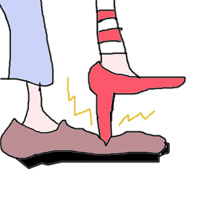

| SHI |
SHE stopped you from having a good time. |
|
Picture your foot, with her spiked heel stomping on your instep - you can't walk. You been STOPPED.  |
| ( を ) と＊める |
I stop it
★★★★★ |
| ( が ) と＊まる |
it gets stopped
★★★★★ |
| 中止 された |
stop/cancel
★★☆☆☆
NP
(temporarily) stopped or (permanently) canceled. This is a word you'd hear in an announcement. You wouldn't say to your friend, "I'm going to 中止 watching TV for a week." |
| 痛み止め |
pain-killer,
★★☆☆☆
pain-killer, like aspirin. (BOOBOO: not anaesthetic, which is 麻酔（ますい） ) |
|
ban
禁止 廃止 発禁 廃棄 駆逐 追放 |
|
hinder, obstruct, put a stop to.
阻む 阻止する 障る 防ぐ 妨げる |
|
stop
止まる 留まる |
 KANJIDAMAGE
KANJIDAMAGE
 Number
273
Number
273